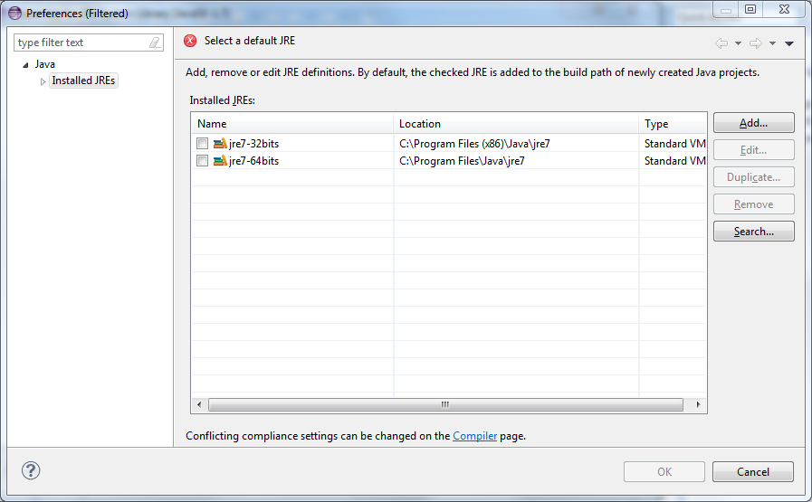

See also
Overview | C++ | Python | .Net | Java | Matlab | Urbi
Java SDK | Java installation guide | Compiling and running the examples | Compiling the Java bindings from source | Java troubleshooting | Java SDK changelog
Exception in thread "main" java.lang.UnsatisfiedLinkError: no jnaoqi in
java.library.path
Please make sure that the java.library.path property is correctly set.
You are using Java 64bits. Please make sure to use a 32bits JRE, even on a 64bits Windows.
# Download and install the jdk 32 bits from oracle’ s web site
# Then, add the 32bits jre to eclipse:
File / Properties / JRE System Libraries / Alternate JRE / Installed JREs ...
Then Search ...
The select C:\Program Files (x86)\Java
Then give it a reasonable name (for instance jre7-32bits
You should end up with something looking like this:
# Create a new Java project:
JRE/ Use a project specific JRE, and select jre7-32bits from the list